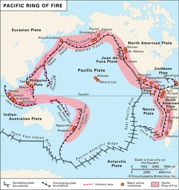

Earthquake Awareness PH
This website provides comprehensive information about earthquakes in the Philippines, including their causes, fault systems, volcanic links, safety guidelines, and the latest official updates from PHIVOLCS and other trusted sources.

GeoKnow that the Philippines is located along the Pacific Ring of Fire, making it highly prone to seismic activity.